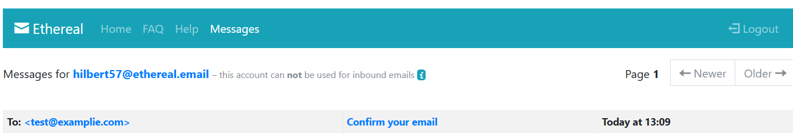
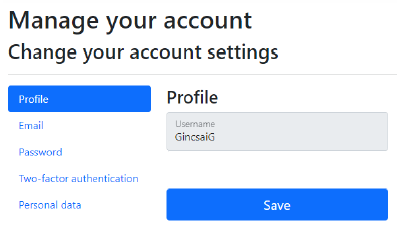

4.3. Felhasználó kezelés¶
Felhasználókezeléshez a legkézenfekvőbb megoldás ha nem saját implementációt készítenünk, ugyanis ez nagyon sok hibalehetőséget hordoz magában. Például a felhasználó jelszavának ténylegesen titkosított, nem visszafejthető (hashelést és saltot alkalmazó) módon történő tárolását vagy a harmadik fél általi autentikációs mechanizmusok kezelését.
Használjuk tehát az ASP.NET Core elterjedt és szinte bármilyen esetben jól alkalmazható ASP.NET Core Identity megoldását, amivel a fenti problémákat meg tudjuk oldani.
Az ASP.NET Identity hivatalos dokumentációját is érdemes lehet átnézni.
Identity beállítása¶
Az ASP.NET Identity-t a BookShop.Web.RazorPage projektben is be kell állítani, hogy pontosan hogyan szeretnénk használni.
Az első lépés, az Identity hozzáadása amit sokféleképpen megtehetünk attól függően mit szeretnénk használni. Tekintsük is át a lehetőségeket.
AddIdentityCore¶
A felhasználókezeléshez szükséges legfontosabb szolgáltatásokat regisztrálja be egy default implementációval a DI-ba.
- Szükséges validátorok.
IUserConfirmation<TUser>, ami azt ellenőrzi, hogy a felhasználó e-mail címe meg lett-e erősítve.IdentityErrorDescribera felhasználókezelés során keletkező hibák leírása.ClaimsPrincipalFactory, amivel aClaimsPrincipal-t hozza létre az adott felhasználóhoz.UserManager, ami a felhasználó kezeléshez nélkülözhetetlen metódusokat tartalmazza.
AddIdentityCore forráskódja mit állít be helyettünk
public static IdentityBuilder AddIdentityCore<TUser>(this IServiceCollection services, Action<IdentityOptions> setupAction)
where TUser : class
{
// Services identity depends on
services.AddOptions().AddLogging();
services.AddMetrics();
// Services used by identity
services.TryAddScoped<IUserValidator<TUser>, UserValidator<TUser>>();
services.TryAddScoped<IPasswordValidator<TUser>, PasswordValidator<TUser>>();
services.TryAddScoped<IPasswordHasher<TUser>, PasswordHasher<TUser>>();
services.TryAddScoped<ILookupNormalizer, UpperInvariantLookupNormalizer>();
services.TryAddScoped<IUserConfirmation<TUser>, DefaultUserConfirmation<TUser>>();
// No interface for the error describer so we can add errors without rev'ing the interface
services.TryAddScoped<IdentityErrorDescriber>();
services.TryAddScoped<IUserClaimsPrincipalFactory<TUser>, UserClaimsPrincipalFactory<TUser>>();
services.TryAddScoped<UserManager<TUser>>();
if (setupAction != null)
{
services.Configure(setupAction);
}
return new IdentityBuilder(typeof(TUser), services);
}
AddDefaultIdentity¶
Használatához szükséges a Microsoft.AspNetCore.Identity.UI NuGet package telepítése.
Hozzáadja a leggyakoribb szolgáltatásokat, beleértve az alapértelmezett felhasználói felületet, a token szolgáltatókat, valamint konfigurálja a süti alapú hitelesítést, de a szerepkörök kezelését külön kell hozzáadni az .AddRoles<IdentityRole<int>>() meghívásával. Az alábbiakban látható, hogy pontosan mit állít be.
Nagyjából azt csinálja, mintha kézzel meghívnánk az AddIdentityCore, AddDefaultUI, AddDefaultTokenProviders-t.
Az AddDefaultUI teszi lehetővé, hogy az alapértelmezett Identity oldalakat használhassuk. Az egyes oldalak egy külön Razor Class Libraryben vannak, így a kódja nem érhető el, nem módosítható csak akkor ha legeneráljuk a megfelelő oldalat a mi kódunkba is, amit majd a későbbiekben bemutatott Scaffolding-gal tudunk megtenni.
A DefaultUI-hoz szükséges ehhez szükséges SingInManager és egy üres IEmailSender is regisztrációra kerül.
AddDefaultIdentity forráskódja mit állít be helyettünk
public static IdentityBuilder AddDefaultIdentity<TUser>(this IServiceCollection services, Action<IdentityOptions> configureOptions) where TUser : class
{
services.AddAuthentication(o =>
{
o.DefaultScheme = IdentityConstants.ApplicationScheme;
o.DefaultSignInScheme = IdentityConstants.ExternalScheme;
}).AddIdentityCookies(o => { });
return services.AddIdentityCore<TUser>(o =>
{
o.Stores.MaxLengthForKeys = 128;
configureOptions?.Invoke(o);
}).AddDefaultUI().AddDefaultTokenProviders();
}
AddIdentity¶
Úgy konfigurálja fel az Identity-t, hogy minden részét használhassuk, ami persze nem biztos, hogy mindig kell.
- HttpContextAccessor
- UserManager-en felül SingInManager és RoleManager.
- 3rd party login, 2FA autentikácó és a hozzá tartozó sütik.
- Belépés pass key használatával.
- Szerepkör kezelés beállítása.
AddIdentity forráskódja mit állít be helyettünk
public static IdentityBuilder AddIdentity<TUser, [DynamicallyAccessedMembers(DynamicallyAccessedMemberTypes.PublicConstructors)] TRole>(
this IServiceCollection services,
Action<IdentityOptions> setupAction)
where TUser : class
where TRole : class
{
// Services used by identity
services.AddAuthentication(options =>
{
options.DefaultAuthenticateScheme = IdentityConstants.ApplicationScheme;
options.DefaultChallengeScheme = IdentityConstants.ApplicationScheme;
options.DefaultSignInScheme = IdentityConstants.ExternalScheme;
})
.AddCookie(IdentityConstants.ApplicationScheme, o =>
{
o.LoginPath = new PathString("/Account/Login");
o.Events = new CookieAuthenticationEvents
{
OnValidatePrincipal = SecurityStampValidator.ValidatePrincipalAsync
};
})
.AddCookie(IdentityConstants.ExternalScheme, o =>
{
o.Cookie.Name = IdentityConstants.ExternalScheme;
o.ExpireTimeSpan = TimeSpan.FromMinutes(5);
})
.AddCookie(IdentityConstants.TwoFactorRememberMeScheme, o =>
{
o.Cookie.Name = IdentityConstants.TwoFactorRememberMeScheme;
o.Events = new CookieAuthenticationEvents
{
OnValidatePrincipal = SecurityStampValidator.ValidateAsync<ITwoFactorSecurityStampValidator>
};
})
.AddCookie(IdentityConstants.TwoFactorUserIdScheme, o =>
{
o.Cookie.Name = IdentityConstants.TwoFactorUserIdScheme;
o.Events = new CookieAuthenticationEvents
{
OnRedirectToReturnUrl = _ => Task.CompletedTask
};
o.ExpireTimeSpan = TimeSpan.FromMinutes(5);
});
// Hosting doesn't add IHttpContextAccessor by default
services.AddHttpContextAccessor();
services.AddMetrics();
// Identity services
services.TryAddScoped<IUserValidator<TUser>, UserValidator<TUser>>();
services.TryAddScoped<IPasswordValidator<TUser>, PasswordValidator<TUser>>();
services.TryAddScoped<IPasswordHasher<TUser>, PasswordHasher<TUser>>();
services.TryAddScoped<ILookupNormalizer, UpperInvariantLookupNormalizer>();
services.TryAddScoped<IRoleValidator<TRole>, RoleValidator<TRole>>();
// No interface for the error describer so we can add errors without rev'ing the interface
services.TryAddScoped<IdentityErrorDescriber>();
services.TryAddScoped<ISecurityStampValidator, SecurityStampValidator<TUser>>();
services.TryAddEnumerable(ServiceDescriptor.Singleton<IPostConfigureOptions<SecurityStampValidatorOptions>, PostConfigureSecurityStampValidatorOptions>());
services.TryAddScoped<ITwoFactorSecurityStampValidator, TwoFactorSecurityStampValidator<TUser>>();
services.TryAddScoped<IUserClaimsPrincipalFactory<TUser>, UserClaimsPrincipalFactory<TUser, TRole>>();
services.TryAddScoped<IUserConfirmation<TUser>, DefaultUserConfirmation<TUser>>();
services.TryAddScoped<IPasskeyHandler<TUser>, PasskeyHandler<TUser>>();
services.TryAddScoped<UserManager<TUser>>();
services.TryAddScoped<SignInManager<TUser>>();
services.TryAddScoped<RoleManager<TRole>>();
if (setupAction != null)
{
services.Configure(setupAction);
}
return new IdentityBuilder(typeof(TUser), typeof(TRole), services);
}
AddIdentityApiEndpoints¶
Beállítja, hogy az autentikáció működjön bearer tokennel és sütivel is.
- Mint látható ez is a
AddIdentityCore-t hívja a szükséges beállításokhoz, e miatt ez a megoldás sem állítja be alapértelmezés szerint a szerepkörök kezelését, amit a.AddRoles<IdentityRole<int>>()meghívásával tehetünk meg. - Az
AddApiEndpoints()teszi lehetővé hogy a kódban használhassuk aMapIdentityApiami egy minimal API a felhasználókezeléshez. Tipikusan akkor használjuk ha nem szerver oldalon renderelt alkalmazást készítünk (pl: Blazor WASM).
AddIdentityApiEndpoints forráskódja mit állít be helyettünk
/// Adds a set of common identity services to the application to support <see cref="IdentityApiEndpointRouteBuilderExtensions.MapIdentityApi{TUser}(IEndpointRouteBuilder)"/>
/// and configures authentication to support identity bearer tokens and cookies.
public static IdentityBuilder AddIdentityApiEndpoints<TUser>(this IServiceCollection services, Action<IdentityOptions> configure)
where TUser : class, new()
{
ArgumentNullException.ThrowIfNull(services);
ArgumentNullException.ThrowIfNull(configure);
services
.AddAuthentication(IdentityConstants.BearerAndApplicationScheme)
.AddScheme<AuthenticationSchemeOptions, CompositeIdentityHandler>(IdentityConstants.BearerAndApplicationScheme, null, compositeOptions =>
{
compositeOptions.ForwardDefault = IdentityConstants.BearerScheme;
compositeOptions.ForwardAuthenticate = IdentityConstants.BearerAndApplicationScheme;
})
.AddBearerToken(IdentityConstants.BearerScheme)
.AddIdentityCookies();
return services.AddIdentityCore<TUser>(configure)
.AddApiEndpoints();
}
- Illetve a minimal API végpontok használatához a
MapIdentityApimeghívása is szükséges a megfelelő helyen.Program.csapp.UseAuthentication(); app.UseAuthorization(); app.UseSession(); app.MapIdentityApi<ApplicationUser>(); app.MapStaticAssets(); app.MapRazorPages() .WithStaticAssets();
Identity DefaultUI-al¶
Felhasználói felületet még nem kaptunk a felhasználókezeléshez, viszont ezt sem kell kézzel megírni, mert Scaffolding segítségével létre tudunk hozni egy alapértelmezett implementációt.
Ahhoz, hogy tudjuk a Scaffoldingot használni a BookShop.Web.RazorPage projekthez adjuk hozzá a Microsoft.VisualStudio.Web.CodeGeneration.Design NuGet package-et.
-
Állítsuk be úgy az Identity-t a lehető legegyszerűbb módon.
Program.csbuilder.Services.AddDbContext<BookShopDbContext>(options => options.UseSqlServer(connectionString)); builder.Services.AddDefaultIdentity<ApplicationUser>() .AddEntityFrameworkStores<BookShopDbContext>(); -
Indítsuk el az alkalmazást és nyissuk meg a
/Identity/Account/Loginoldalt és azt fogjuk tapasztalni, hogy hiányzik a_LoginPartial.cshtmlfájl.
Hiányzik a LoginPartial.cshtml
-
Hozzuk létre kézzel üres tartalommal a Pages/Shared könyvtárba. Fontos, hogy az Add New Item.. -> Razor View - Empty-t válasszuk ne a page-et, mert egy nem oldal, hanem csak egy view és mindenképpen
_LoginPartial.cshtmlnevet adjuk neki. A létrehozott fájt tartalmát törölhetjük. -
Indítsuk el az alkalmazást és ismért nyissuk meg a
/Identity/Account/Loginoldalt és lépjünk be az admin felhasználóval- admin@example.com
- Password123!
-
Ha mindent jól csináltunk be is tudunk lépni. Hasonlóan a
/Identity/Account/Logoutvagy a/Identity/Account/Registeroldal is működik, de a fejlécben nincs belépés / regisztráció gomb, amit pont a _LoginPartial.cshtml feladata lenne megjeleníteni. Így a következő feladatunk, hogy ezeket az oldalakat valahogy legeneráljuk.
Identity Options¶
Tegyünk egy kis kitérőt, és nézzük meg, hogy az Identity nyújtotta lehetőségeket hogyan tudjuk konfigurálni az IdentityOptions beállításaival. Ezt megtehetjük úgy, hogy az AddDefaultIdentity / AddIdentity / AddIdentityCore-nek adjuk át a beállítást, úgy ahogy eddig, vagy a Configure<IdentityOptions> függvényt használjuk.
Állítsuk be a jelszóra, kitiltása, felhasználóra és belépésre vonatkató szabályokat. Az alábbiban láthatunk egy javasolt beállítást ezekre az adatokra, a biztonságot szem előtt tartva.
builder.Services.AddDefaultIdentity(
// builder.Services.AddIdentityCore(
// builder.Services.AddIdentity<ApplicationUser, IdentityRole<int>>(
options =>
{
// Password settings.
options.Password.RequiredLength = 12;
options.Password.RequireNonAlphanumeric = true;
options.Password.RequireUppercase = true;
options.Password.RequireLowercase = true;
options.Password.RequireDigit = true;
options.Password.RequiredUniqueChars = 6;
// Lockout settings.
options.Lockout.DefaultLockoutTimeSpan = TimeSpan.FromMinutes(10);
options.Lockout.MaxFailedAccessAttempts = 5;
options.Lockout.AllowedForNewUsers = true;
// User settings.
options.User.RequireUniqueEmail = true;
options.User.AllowedUserNameCharacters =
"abcdefghijklmnopqrstuvwxyzABCDEFGHIJKLMNOPQRSTUVWXYZ0123456789-._@+";
// Sign‑in (only for production scenarios, for development you might want to disable these).
options.SignIn.RequireConfirmedAccount = true;
options.SignIn.RequireConfirmedEmail = true;
})
.AddEntityFrameworkStores<BookShopDbContext>()
.AddDefaultTokenProviders();
A fenti beállítás a Configure-t használva
Ha ezt a megoldást használjuk akkor az AddIdentity-nél ne állítsuk be ezt.
builder.Services.Configure<IdentityOptions>(options =>
{
// Password settings.
options.Password.RequiredLength = 12;
options.Password.RequireNonAlphanumeric = true;
options.Password.RequireUppercase = true;
options.Password.RequireLowercase = true;
options.Password.RequireDigit = true;
options.Password.RequiredUniqueChars = 6;
// Lockout settings.
options.Lockout.DefaultLockoutTimeSpan = TimeSpan.FromMinutes(10);
options.Lockout.MaxFailedAccessAttempts = 5;
options.Lockout.AllowedForNewUsers = true;
// User settings.
options.User.RequireUniqueEmail = true;
options.User.AllowedUserNameCharacters =
"abcdefghijklmnopqrstuvwxyzABCDEFGHIJKLMNOPQRSTUVWXYZ0123456789-._@+";
// Sign‑in (only for production scenarios, for development you might want to disable these).
options.SignIn.RequireConfirmedAccount = true;
options.SignIn.RequireConfirmedEmail = true;
});
Identity oldalak létrehozása¶
A fenti példában láttuk, hogy ha a _LoginPartial.cshtml megvan (akár üresen) akkor már működik a DefaultUI. Most a feladat az lenne, hogy legeneráljunk pár fontos oldalt, hogy azt szükség esetén testre tudjuk szabni.
Erre két módszer van. Használhatjuk a Visual Studio grafikus felületét, ami nem fog jó kódot generálni és sok manuális módosítás szükséges, vagy .NET CLI-ből is generálhatjuk, ahol kevesebb módosítás szükséges.
Grafikus felület¶
Visual Studioban az Idenetity-hez tartozó oldalakat le lehet generálni (scaffold), amit a Add -> New Scaffolded item... segítségével tehetünk meg. Itt először ki kell választani, hogy az Identity oldalakat szeretnénk generálni, majd kiválasztani, hogy mely oldalakat szeretnénk és megadni, hogy melyik DbContext-et használja.

Identity oldalak
Ki lehet próbálni, hogy milyen kódot generál, de sajnálatos módon a generátor nem fogja megtalálni helyesen a BookShopDbContext-et és a generált kódban a saját ApplicationUser osztály helyett mindenhol az IdentityUser-t fogja használni, amit kézzel kellene mindenhol javítani.
Fontos viszont hogy ha kipróbáljuk és nem akarjuk mindenhol átírni, akkor töröljük az összes generált kódot
- Areas könyvtár teljes tartalmát
- Ha létrehozza a
Pages/Shares/_LoginPartial.cshtmlakkor annak legalább a tartalmát. Program.csfájlból ausing BookShop.Web.RazorPage.Areas.Identity.Data;sort.
.NET CLI¶
A másik megoldás, hogy a parancssorból a aspnet-codegenerator segítségével generáljuk ki az oldalakat.
Fontos, hogy a parancsot mindig a BookShop.Web.RazorPage projekt könyvtárából kell majd futtassuk!
-
Ehhez telepítsük fel a
dotnet-aspnet-codegeneratorcsomagot.dotnet tool install -g dotnet-aspnet-codegenerator -
A
BookShop.Web.RazorPageprojekt könyvtárából kell majd futtassuk a parancsot a--helpkapcsolóval, hogy lássuk milyen opciókat adhatunk meg.dotnet aspnet-codegenerator identity --help -
Futtassuk úgy a parancsot, hogy az alapértelmezett oldalakat szeretnénk használni. Ez legenerálja a
_LoginPartial.cshtml-t is, viszont mivel ilyen fájlunk már van (bár csak üres tartalommal) szóval töröljük. Sajnos a--forcekapcsolót, hogy felülírja a már létező fájlokat itt nem működik :(.dotnet aspnet-codegenerator identity -dc BookShop.Dal.BookShopDbContext -u BookShop.Dal.Entities.ApplicationUser --useDefaultUI -
A létrehozott kód persze nem tökéletes, az alábbi javítások szükségesek, hogy működjön az alkalmazás Az
Ares/Identity/Datakönyvtárat töröljük, mert ide létrehoz egy új DbContext-et, amire nincs szükség és azApplicationUserosztályt is létrehozza. Hiába adjuk meg a DbContext-et és a User osztály típusát nem találja meg a generátor. Bár azzal, hogy a User osztály típusának-umegadtuk aBookShop.Dal.Entities.ApplicationUserlegalább jó névvel hivatkozik rá, így ha töröljük a fájlt minden probléma megoldódik :)
Alapértelmezett UI-hoz generált oldalak
-
Ha ezzel elkészültünk, akkor már csak egy apróságot kell megtennünk, mégpedig a
_Layoutoldalra kitenni a Bejelentkezés és Regisztráció gombokat. Ehhez a Scaffolding elkészített nekünk egy_LoginPartialnézetet, és elegendő azt kitenni az oldalra, és az majd lekezelni, hogy éppen a Bejelentkezés vagy a Kijelentkezés gombot kell-e mutatni. A partial view-t a menüpontokat tartalmazó lezáró tag mögé tegyük, hogy jobbra legyen igazítva._Layout.cshtml<div class="navbar-collapse collapse d-sm-inline-flex justify-content-between"> <ul class="navbar-nav flex-grow-1"> <li class="nav-item"> <a class="nav-link text-dark" asp-area="" asp-page="/Index">Home</a> </li> @* ... *@ </ul> <partial name="_LoginPartial" /> </div> -
Így már megjelenik a Register és Login vagy a Logoff gombok is. Ha testre szeretnénk szabni, akkor a
_LoginPartial.cshtml-ben tudjuk ezt megtenni. -
Ha több oldalt is testre szeretnénk szabni, akkor azt úgy tehetjük meg, hogy a
--fileskapcsoló mögött felsoroljuk azokat idézőjelek között, pontosvesszővel elválasztva az oldalakat, amit le szeretnénk generáltatni. A lehetséges fájlneveket megkapjuk ha a--listFileskapcsolóval futtatva a parancsot.Leheséges fájlnevek listázásadotnet aspnet-codegenerator identity --listFilesRegister, Login... oldalak létrehozásadotnet aspnet-codegenerator identity -dc BookShop.Dal.BookShopDbContext -u BookShop.Dal.Entities.ApplicationUser --files "Account.Register;Account.Login;Account.Logout;Account.ConfirmEmail;Account._StatusMessage;Account.RegisterConfirmation"
Egyedi UI¶
Ha a Default UI-t használjuk akkor minden oldal elérhető akkor is ha nem szerepel az oldal a kódunkban. Tehát ha csak bizonyos oldalakat szeretnénk használni, akkor el kell engedni a Default UI használatát és a szükséges oldalakhoz kell igazítani a konfigurációt. Az előző lépésben ezeket az oldalakat generáltuk le:
- Account.Register: Regisztrációs oldal, amit majd ki kell egészíteni a
DisplayNametulajdonsággal. - Account.Login: Bejelentkezés oldal
- Account.Logout: Kijelentkezés oldal
-
Account.RegisterConfirmation: Ha a
options.SignIn.RequireConfirmedAccount = false-ra van állítva, akkor nem használja ezt az oldalt, regisztráció után azonnal belépteti a felhasználót. Hatrueaz értéke akkor viszont erre az oldalra irányítja a felhasználót, ahol jelzi, hogy e-mailben megkapta a megerősítéshez szükséges adatokat.Felületről is meg tudjuk erősíteni
A felületről is le tudjuk kattintani a megerősítést.
Production környezetbe ezt kapcsoljuk ki
Az
RegisterConfirmation.cshtml.cs-ben azOnGetAsync()metódusban aDisplayConfirmAccountLink = true;-t kell módosítani, hogy ne jelenítse meg a jóváhagyás linket. -
Account.ConfirmEmail: Ezen az oldalon lehet megerősíteni az email címet, mert ennek az URL-jét küldi el emailben a felhasználónak regisztráció után.
-
Account._StatusMessage: A ConfirmEmail használja.
-
Ha nincs szükség 2FA akkor elegendő az
AddIdentityCorehasználata, de aSingInManager-t kézzel kell hozzáadni.Program.csbuilder.Services.AddIdentityCore<ApplicationUser>() .AddRoles<IdentityRole<int>>() .AddSignInManager() .AddEntityFrameworkStores<BookShopDbContext>(); -
Ha így elindítjuk az alkalmazást az betölt, de a Login és Register oldal is hibát dob
-
a Login oldal hiányolja a külső belépéses sütiket.
No sign-out authentication handlers are registered
InvalidOperationException: No sign-out authentication handlers are registered. Did you forget to call AddAuthentication().AddCookie("Identity.External",...)?
-
a Register oldal pedig egy
IEmailSenderimplementációt hiányol.Unable to resolve service for IEmailSender
InvalidOperationException: Unable to resolve service for type 'Microsoft.AspNetCore.Identity.UI.Services.IEmailSender' while attempting to activate 'BookShop.Web.RazorPage.Areas.Identity.Pages.Account.RegisterModel'.
-
A hibaüzenet szerencsére részletesen leírja, hogy mit kell még beállítani, így az alábbi kódrészlettel könnyen orvosolhatjuk a problémát:
Program.csbuilder.Services.AddIdentityCore<ApplicationUser>() .AddRoles<IdentityRole<int>>() .AddSignInManager() .AddEntityFrameworkStores<BookShopDbContext>(); builder.Services.AddAuthentication() .AddCookie(IdentityConstants.ExternalScheme, o => { o.Cookie.Name = IdentityConstants.ExternalScheme; o.ExpireTimeSpan = TimeSpan.FromMinutes(5); }); builder.Services.TryAddTransient<IEmailSender, NoOpEmailSender>(); -
-
Ha nem szeretnénk a fentiek szerint küzdeni a beállításokkal akkor a legtutibb megoldás, ami mindent bekapcsol csak az
IEmailSenderimplementációt kell beregisztrálni, hiszen ez az implementáció egyedi kell legyen. A későbbiekben készítünk is hozzá saját implementációt.Program.csbuilder.Services.AddIdentity<ApplicationUser, IdentityRole<int>>( options => { options.SignIn.RequireConfirmedAccount = false; }) .AddEntityFrameworkStores<BookShopDbContext>() .AddDefaultTokenProviders(); builder.Services.TryAddTransient<IEmailSender, NoOpEmailSender>();
{kind=link}
A fenti beállításokat használva már tényleg nem érjük el azokat az oldalakat, amiket nem generáltunk le.
Validációs hibák¶
-
Ahhoz, hogy a validációs hibák illeszkedjenek a bootstrap stílushoz, meg kell adni, hogy a jquery validation a bootstrap-es CSS osztályokat (is-valid és is-invalid) használja. Ehhez készítsünk egy
validation.jsfájlt awwwroot/jskönyvtárban fájlt az alábbi tartalommalvalidation.jsvar settings = { validClass: "is-valid", errorClass: "is-invalid" }; $.validator.setDefaults(settings); $.validator.unobtrusive.options = settings; -
Ezt követően már csak annyi dolgunk van, hogy a
_ValidationScriptsPartial.cshtml-be hivatkozzuk be ezt a js fájlt is. Fontos, hogy aPages\Sharesalatt és azAreas\Identity\Pageskönyvtárban is található 1-1_ValidationScriptsPartial.cshtmlfájl. Mind a kettőbe tegyük bele!_ValidationScriptsPartial.cshtml<script src="~/lib/jquery-validation/dist/jquery.validate.min.js"></script> <script src="~/lib/jquery-validation-unobtrusive/dist/jquery.validate.unobtrusive.min.js"></script> <script src="~/js/validation.js"></script> -
Így már bootstrap alapú a validáció, viszont ha hiba van akkor az egész űrlap lentebb csúszik, hogy meg tudjon jelenni a hibaüzenet. Ezt kétféleképpen orvosolhatjuk.
- A legegyszerűbb megoldás, hogyha csak a kötelezőséget ellenőrzünk, akkor nem jelenítünk meg hibaüzenetet. Ehhez annyit kell tenni, hogy az űrlapon az egyes inputokhoz rendelt
<span asp-validation-fortageket kiszedjük. De sajnos ilyenkor az a hibaüzenet sem jelenik meg ami azt jelzi, ha érvénytelen az email cím.
Login.cshtml<div class="form-floating mb-3"> <input asp-for="Input.Email" class="form-control" autocomplete="username" aria-required="true" placeholder="name@example.com" /> <label asp-for="Input.Email" class="form-label">Email</label><span asp-validation-for="Input.Email" class="text-danger"></span></div>- A másik megoldás, hogy kicsit nagyobb helyet hagyunk az egyes inputok között (mb-4) és az
invalid-tooltipCSS osztályt használjuk egy kis testreszabással. Ez a password mezőn állítsuk be, és akkor mindkét validáció látszódik.
Login.cshtml<div class="form-floating mb-4"> <input asp-for="Input.Password" class="form-control" autocomplete="current-password" aria-required="true" placeholder="password" /> <label asp-for="Input.Password" class="form-label">Password</label> <span asp-validation-for="Input.Password" class="invalid-tooltip"></span> </div>site.css.invalid-tooltip { width: 100%; margin-top: 0; padding-top: 0; padding-bottom: 0; font-size: .75rem; } - A legegyszerűbb megoldás, hogyha csak a kötelezőséget ellenőrzünk, akkor nem jelenítünk meg hibaüzenetet. Ehhez annyit kell tenni, hogy az űrlapon az egyes inputokhoz rendelt
Elkészült validációs hibák

A kétféle validációs hiba
Saját email sender¶
Email küldéséhez szükségünk van egy SMTP szerverre, ami lehet a google szolgáltatása is, vagy a fejlesztési célokra kitalált ál email küldő az Ethereal is. A gyakorlaton mi ez utóbbit fogjuk használni, mert a regisztrációja nagyon egyszerű.
Nyissuk meg a böngészőben a https://ethereal.email/create oldalt és ott kattintsunk a Create Ethereal Accont gombra, ami azonnal létre is hozza a felhasználónkat, melynek adatai az alábbi ábrán látható. Figyelem, véletlen adatokkal hozza létre, így az adatok mindenkinél mások lehetnek!
{kind=link}
Etheral account adatai
Az ábrán látható adatokat kell megadni ahhoz, hogy email tudjunk küldeni ezzel az SMTP szolgáltatással. Ehhez először vegyünk fel egy osztályt EMailSettings névvel és az alábbi kóddal.
namespace BookShop.Web.RazorPage.Settings;
public class EmailSettings
{
public string Mail { get; set; } = null!;
public string DisplayName { get; set; } = null!;
public string Password { get; set; } = null!;
public string Host { get; set; } = null!;
public int Port { get; set; }
}
A fenti osztály fogja tárolni az SMTP szervere beállításait, azonban a konkrét értékeket a config fájlba szeretnénk tárolni, így az appsettings.Developement.json-ba vegyük fel az alábbi részt. Az adatok az ethereal oldalról származnak. Fontos, hogy a saját adatainkkal töltsük fel a fájlt, mert egyébként nem fogjuk tudni az Ethereal oldalán megnézni az emaileket.
{
"DetailedErrors": true,
"Logging": {
"LogLevel": {
"Default": "Information",
"Microsoft.AspNetCore": "Warning"
}
},
"EMailSettings": {
"Mail": "hilbert57@ethereal.email",
"DisplayName": "Hilbert Blick",
"Password": "5czSsn3CmAsKjgyykP",
"Host": "smtp.ethereal.email",
"Port": 587
}
}
Ezt követően már csak az IEmailSender interfészt kell megvalósítani, hogy ténylegesen ki tudjuk küldeni a leveleket, amihez hozzuk létre az EmailSender osztályt az alábbi implementációval:
using BookShop.Web.RazorPage.Settings;
using Microsoft.AspNetCore.Identity.UI.Services;
using Microsoft.Extensions.Options;
using System.Net.Mail;
namespace BookShop.Web.RazorPage.Services;
public class EmailSender(IOptions<EmailSettings> emailSettingsOptions, ILogger<EmailSender> logger) : IEmailSender
{
private readonly EmailSettings emailSettings = emailSettingsOptions.Value;
public async Task SendEmailAsync(string email, string subject, string htmlMessage)
{
var client = new SmtpClient(emailSettings.Host, emailSettings.Port)
{
EnableSsl = true,
Credentials = new System.Net.NetworkCredential(emailSettings.Mail, emailSettings.Password)
};
var from = new MailAddress(emailSettings.Mail, emailSettings.DisplayName, System.Text.Encoding.UTF8);
var to = new MailAddress(email);
var message = new MailMessage(from, to)
{
Body = htmlMessage,
BodyEncoding = System.Text.Encoding.UTF8,
IsBodyHtml = true,
Subject = subject,
SubjectEncoding = System.Text.Encoding.UTF8
};
await client.SendMailAsync(message);
if (logger.IsEnabled(LogLevel.Information))
logger.LogInformation("Email sent to: {to}", to.Address);
}
}
A Program.cs-ben állítsuk be, hogy az appsettings alapján töltse fel a EMailSettings osztályt, és a saját e-mail sender implementációnkat regisztráljuk be a DI-ba a NoOpEmailSender helyett.
// builder.Services.TryAddTransient<IEmailSender, NoOpEmailSender>();
builder.Services.TryAddTransient<IEmailSender, EmailSender>();
// Reads the email settings from the configuration and registers it in the DI container.
builder.Services.Configure<EmailSettings>(builder.Configuration.GetSection("EMailSettings"));
Regisztrációs oldal testreszabása¶
Ha kipróbáljuk a regisztrációs oldalt, az még nem működik, mert a DisplayName-et nem kérjük be a felületen.
-
Nyissuk meg az
Areas.Identity.Pages.Account/Registe.cshtml.csfájlt és azInputModel-be vegyük fel a DisplayName-et, illetve azOnPostAsync-ba állítsuk is be.Register.cshtml.cs - InputModelpublic class InputModel { [Required] [EmailAddress] [Display(Name = "Email")] public string Email { get; set; } [Required] [Display(Name = "Display name")] public string DisplayName { get; set; } [Required] [StringLength(100, ErrorMessage = "The {0} must be at least {2} and at max {1} characters long.", MinimumLength = 6)] [DataType(DataType.Password)] [Display(Name = "Password")] public string Password { get; set; } [DataType(DataType.Password)] [Display(Name = "Confirm password")] [Compare("Password", ErrorMessage = "The password and confirmation password do not match.")] public string ConfirmPassword { get; set; } }- Figyeljük meg, hogy a modell osztályban az egyes tulajdonságok előtt lévő attibútumokkal állítjuk be, hogy melyik megző kütelező, vagy hogy a
ConfirmPasswordmeg kell egyezzen aPassword-del. Tehát attribútum alapú validációt használunk.
Register.cshtml.cs - OnPostAsyncpublic async Task<IActionResult> OnPostAsync(string returnUrl = null) { returnUrl ??= Url.Content("~/"); ExternalLogins = (await _signInManager.GetExternalAuthenticationSchemesAsync()).ToList(); if (ModelState.IsValid) { var user = CreateUser(); // Set the display name for the user. user.DisplayName = Input.DisplayName; await _userStore.SetUserNameAsync(user, Input.Email, CancellationToken.None); await _emailStore.SetEmailAsync(user, Input.Email, CancellationToken.None); var result = await _userManager.CreateAsync(user, Input.Password); // ... } // If we got this far, something failed, redisplay form return Page(); }- Sikeres validáció után hozzuk létre a felhasználót a
CreateUser-re, majd ezt követően állítjuk be aDisplayName-et. Külön függvények segítik azUserNameésEmailbeállítását, ami után a_userManager.CreateAsync()hozza ténylegesen létre a felhasználót a megadott jelszóval.
- Figyeljük meg, hogy a modell osztályban az egyes tulajdonságok előtt lévő attibútumokkal állítjuk be, hogy melyik megző kütelező, vagy hogy a
-
Ezt követően a felülere is tegyük ki az email cím alá a szövegdobozt, amiben a felhasználó meg tudja adni a nevét.
Register.cshtml<form id="registerForm" asp-route-returnUrl="@Model.ReturnUrl" method="post"> <h2>Create a new account.</h2> <hr /> <div asp-validation-summary="ModelOnly" class="text-danger" role="alert"></div> <div class="form-floating mb-3"> <input asp-for="Input.Email" class="form-control" autocomplete="username" aria-required="true" placeholder="name@example.com" /> <label asp-for="Input.Email">Email</label> <span asp-validation-for="Input.Email" class="text-danger"></span> </div> <div class="form-floating mb-3"> <input asp-for="Input.DisplayName" class="form-control" aria-required="true" placeholder="" /> <label asp-for="Input.DisplayName">Display name</label> <span asp-validation-for="Input.DisplayName" class="text-danger"></span> </div> <div class="form-floating mb-3"> <input asp-for="Input.Password" class="form-control" autocomplete="new-password" aria-required="true" placeholder="password" /> <label asp-for="Input.Password">Password</label> <span asp-validation-for="Input.Password" class="text-danger"></span> </div> <div class="form-floating mb-3"> <input asp-for="Input.ConfirmPassword" class="form-control" autocomplete="new-password" aria-required="true" placeholder="password" /> <label asp-for="Input.ConfirmPassword">Confirm Password</label> <span asp-validation-for="Input.ConfirmPassword" class="text-danger"></span> </div> <button id="registerSubmit" type="submit" class="w-100 btn btn-lg btn-primary">Register</button> </form> -
Próbáljuk ki az oldalt. Mivel a korábbiakban létrehoztuk Scaffoldinggal a ConfirmEmail és _StatusMessage oldalakat miden működni fog.
Viszont ha megnézzük aRegister.cshtml.csfájlban a kódot, akkor azt vehetjük érszre, hogy akkor is legenerálja a jóváhagyáshoz szükséges linket (ami null lesz ha nincs a ConfirmEmail legenerálva), ha nem kell kiküldeni a megerősítést a felhasználónak.
Csak akkor generáljuk a jóváhagyó linket ha szükséges
- A link generálást elég lenne akkor futtatni, ha tényleg ki kell küldeni a linket. Az alapérelmezett implementációban
DefaultUserConfirmationa logika az, hogy a megerősített email néziIsEmailConfirmedAsync. Tehát az egész email generálásos részt bele kell tenni azif (_userManager.Options.SignIn.RequireConfirmedAccount)alá.
if (result.Succeeded)
{
_logger.LogInformation("User created a new account with password.");
if (_userManager.Options.SignIn.RequireConfirmedAccount)
{
var userId = await _userManager.GetUserIdAsync(user);
var code = await _userManager.GenerateEmailConfirmationTokenAsync(user);
code = WebEncoders.Base64UrlEncode(Encoding.UTF8.GetBytes(code));
var callbackUrl = Url.Page(
"/Account/ConfirmEmail",
pageHandler: null,
values: new { area = "Identity", userId = userId, code = code, returnUrl = returnUrl },
protocol: Request.Scheme);
await _emailSender.SendEmailAsync(Input.Email, "Confirm your email",
$"Please confirm your account by <a href='{HtmlEncoder.Default.Encode(callbackUrl)}'>clicking here</a>.");
// if (_userManager.Options.SignIn.RequireConfirmedAccount)
// {
return RedirectToPage("RegisterConfirmation", new { email = Input.Email, returnUrl = returnUrl });
}
else
{
await _signInManager.SignInAsync(user, isPersistent: false);
return LocalRedirect(returnUrl);
}
}
-
Regisztráljunk be egy új felhasználót az alábbi adatokkal
- email: test@example.com
- displayName: Teszt Elek
- password: Password123!
Sikeres regisztráció
-
Felhasználó létrehozása

-
Megerősítés szükséges. Csak ha be van kapcsolva a
options.SignIn.RequireConfirmedAccount = trueakkor ez az oldal fogad. Egyébként beléptet.
-
Megérkezik a megerősítő email 
-
Megerősítő email tartalma, benne a linkkel.

-
Sikeres megerősítés

{kind=link}
Jogosultság ellenőrzés¶
Azzal, hogy van felhasználó és jogosultság kezelésünk, már be tudjuk állítani, hogy egyes funkciók csak belépett felhasználóknak, vagy adott szerepkörnek legyenek csak elérhetők.
-
Először a
Book.cshtml.csoldalon állítsuk be, hogy a kosárba tételkor szerver oldalon ellenőrizzük, hogy be van-e lépve a felhasználó. Ha nincs akkor 401-el (UnAuthorized)-ot adjunk vissza.Book.cshtml.cspublic async Task<IActionResult> OnPostAddToCartAsync(int bookId) { if(User.Identity?.IsAuthenticated != true) return Unauthorized(); // ... } -
Ugyanezt állítsuk be a komment létrehozásánál is.
Book.cshtml.cspublic async Task<IActionResult> OnPostCreateCommentAsync() { if (User.Identity?.IsAuthenticated != true) return Unauthorized(); // .. } -
Próbáljuk ki, hogy tényleg hibaoldalt kapunk.
-
Rejtsük el a gombokat (új komment, kosárba és új ajánló), ha nincs belépve a felhasználó.
Book.cshml - Kosárba@if (User.Identity?.IsAuthenticated == true) { <form asp-page-handler="AddToCart"> <input type="hidden" name="bookId" value="@Model.Book.Id" /> <button class="btn btn-outline-primary">Korárba</button> </form> }Book.cshml - Új ajánló@if (User.Identity?.IsAuthenticated == true) { <a asp-page="CreateComment" asp-route-bookId="@Model.Book.Id">Új ajánló írása »</a> }Book.cshml - Új komment@if (User.Identity?.IsAuthenticated == true) { <form asp-page-handler="CreateComment"> @* Hidden field bound to NewComment.BookId so it will be set for the click handler. *@ <input type="hidden" asp-for="NewComment.BookId" /> <div class="d-flex"> <div class="d-flex flex-column align-items-center flex-shrink-0 me-3"> <i class="bi bi-person-square fs-1"></i> <div class="text-muted">@(DateTime.Now.ToShortDateString())</div> <div class="text-muted">@(DateTime.Now.ToShortTimeString())</div> </div> <textarea class="w-100" rows="3" asp-for="NewComment.Text"></textarea> </div> <div class="d-flex justify-content-end my-2"> <button type="submit" class="btn btn-outline-primary">Hozzászólok</button> </div> </form> } else { <div>Komment írásához be kell jelentkezned!</div> } -
Ezt követően már a gombok sem látszódnak.
Kosaram oldal láthatóság¶
Tüntessük el a kosaram oldal linkjét is ha nincs belépve a felhasználó.
-
A
_Layout.cshtmloldalon rejtsük el a menüpontot ha nincs belépve a felhasználó._Layout.cshtml@if( User.Identity?.IsAuthenticated == true ) { <li class="nav-item position-relative"> <a class="nav-link text-dark" asp-area="" asp-page="/Cart"> Kosaram @if (Context.Session.Get<List<CartItem>>(BookShopConstants.CartSessionKey)?.Any() == true) { <span class="position-absolute start-100 translate-middle badge rounded-pill bg-danger"> @(Context.Session.Get<List<CartItem>>(BookShopConstants.CartSessionKey)?.Sum(x => x.Count) ?? 0) <span class="visually-hidden">elem a kosárban</span> </span> } </a> </li> } -
A code behind-ban is védjük le, hogy csak belépett felhasználó hívhassa. Itt már használhatjuk az
[Authorize]attribútumot, mert az egész oldalt nem kell elérni.Cart.cshtml.cs[Authorize] public class CartModel(IBookService bookService) : PageModel
Admin oldalak láthatósága¶
Az alkalmazáshoz, különbőző feltöltő és szerkesztő oldalakat is kell készíteni a könyvekhez, kategóriákhoz, vagy akár a felhasználólókhoz. Annak érdekében, hogy ezeknem az "Admin" oldalaknak a jogosultság kezelését egyszerűen tudjuk beállítani egy új módszerrel ismerkedünk meg.
-
Először a layout oldalra a navigációs menübe vegyük fel a Kategóriák szerkesztése, Könyvek szerkesztése, Felhasználók kezelése linkeket. Azonban mivel ez sok helyet foglal tegyük az egészet az Adminisztráció legördülőbe. Ehhez az alábbiak szerint módosítsuk a layout oldalt.
_Layout.cshtml<ul class="navbar-nav flex-grow-1"> @* Other links *@ @if (User.IsInRole("Admin")) { <li class="nav-item dropdown"> <a class="nav-link dropdown-toggle" href="#" id="navbarAdmin" role="button" data-bs-toggle="dropdown" aria-expanded="false"> Adminisztráció </a> <ul class="dropdown-menu" aria-labelledby="navbarAdmin"> <li> <a class="dropdown-item" asp-area="" asp-page="/Admin/ManageCategories">Kategóriák</a> </li> <li> <a class="dropdown-item" asp-area="" asp-page="/Admin/ManageBooks">Könyvek</a> </li> <li> <hr class="dropdown-divider"> </li> <li> <a class="dropdown-item" asp-area="" asp-page="/Admin/ManageUsers">Felhasználók</a> </li> </ul> </li> } </ul> <partial name="_LoginPartial" /> -
Amint látható az adminisztrációs oldalakat egy
Adminkönyvtárba szervezzük, hogy egyszerűbb legyen majd az elérés korlátozása. Ezen felül figyeljük meg, hogy ezt a menüpontot csak akkor érheti el a felhasználó, ha ő is benne van azAdminszerepkörben. Hozzuk is létre a szükséges oldalakat aPages/Adminkönyvtárban.- Pages/Admin/ManageBooks.cshtml
- Pages/Admin/ManageCategories.cshtml
- Pages/Admin/ManageUsers.cshtml
Admin menüpontok
Adminisztrációs menüpontok
-
Ha így kipróbáljuk az alkalmazást egy nem adminisztrátor felhasználóval, akkor a menüpontot nem fogjuk látni, de ha ismerjük az URL-t akkor az oldal betölt. Ez egy komoly hiba, mert mindig védeni kell a backend oldali funkciót is, az nem ad biztonságot, hogy a felülten elrejtjük a linket.
-
Állítsuk be, hogy a
Pages/Aminkönyvtár tartalmát csakAdminszerepkörben lévő felhasználók érhessék el. Ehhez létrehozunk egy policy-t, ami megköveteli, hogy a felhasználó benne legyen az adott szerepkörben. Ehhez az alábbi kódrészletet kell beletenni aProgram.cs-be aRequestContextDI-ba regisztrálása után.Program.csbuilder.Services.AddAuthorizationBuilder() .AddPolicy("RequireAdminRole", policy => policy.RequireRole("Admin")); builder.Services.AddRazorPages(options => { options.Conventions.AuthorizeFolder("/Admin", "RequireAdministratorRole"); }); -
Hasonló konvenció alapú jogosultság kezelést a hivatalos dokumentációban tekinthetjük meg.
-
Így már az oldalt nem lehet elérni, de a login oldalra sem tud átirányítani, mert azt nem a megfelelő helyen keresi, így 404-es hibaoldalt kapunk. A megoldáshoz a
Program.cs-ben azAddRazorPages(amit az előbb módosítottunk) mögé illesszük be az alábbi kódot.Program.csbuilder.Services.ConfigureApplicationCookie(options => { options.Cookie.Name = ".IdentityNet10.Auth"; options.Cookie.HttpOnly = true; options.Cookie.SecurePolicy = CookieSecurePolicy.Always; options.Cookie.SameSite = SameSiteMode.Lax; // or Strict for pure server‑rendered sites options.LoginPath = "/Identity/Account/Login"; options.LogoutPath = "/Identity/Account/Logout"; options.AccessDeniedPath = "/Identity/Account/AccessDenied"; options.SlidingExpiration = true; options.ExpireTimeSpan = TimeSpan.FromMinutes(5); });
{kind=link}
Önálló feladat: Profil oldalak (opcionális)¶
Önálló feladat: Profil oldalak
- Generálja le a profil adatokat szerkesztő oldalakat is, ahol a felhasználó meg tudja változtatni a személyed adatait, email címét, jelszavát, vagy a 2FA adatokat. 
{kind=link}
3rd party login¶
App registration (GUI)¶
Nagy valószínűséggel ez a megoldás a BME tenantban nem használható, mert részlegesen letiltották.
-
Ahhoz, hogy Microsoft Accounttal is be lehessen lépni be kell regisztrálnunk az alkalmazást az Azure portálon, ahol a fent található Új regisztráció-ra kattintva tudunk új alkalmazást regisztrálni. Ez láthatjuk az alábbi ábrán.
Azure App registrations
-
Adjuk meg az alkalmazás adatait (ha elérhető a webes felület). Érdemes megpróbálni a közvetlen linket, mert akkor lehet, hogy engedi: Új alkalmazás regisztrálás
- Alkalmazás neve
- Kik érhetik el az alkalmazást
- Milyen URL-re kell visszairányítani a bejelentkezés után. Ide az alkalmazás URL + a /signin-microsoft -ot kell megadni. http://localhost:5001/signin-microsoft és a https://localhost:44329/signin-microsoft fontos, hogy a HTTPS-es URL-t is megadjuk!
- Végül kattintsunk a Regisztráció gombra.

Új alkalmazás regisztráció
-
Majd készítsünk hozzá privát kulcsot is
App registration beállítása
{kind=link}
{kind=link}
App registration (powershell)¶
Sajnálatos módon a BME Azure-ban ezt a webes felületet már nem lehet elérni, kis trükközéssel még a létrehozás kijátszható, de már beállítani nem tudjuk.
- Indítsunk el egy VS Code-ot
-
Telepítsük fel az Azure Application Registration extensiont, majd indítsuk újra a VS Code-ot.

Azure Application Registration extension
-
Ezt követően nyissuk meg bal oldalon a kiegészítőt, és lent az Application Registration rész kell nekünk.
-
Ha nincs feltelepítve, akkor telepísük fel az Azure CLI-t. Ehhez a terminal ablakban futtassuk az alábbi parancsot.
winget install --exact --id Microsoft.AzureCLI -
Lépjünk be Azure CLI-vel, ehhez kérni fogja a TenantId-t ami 6a3548ab-7570-4271-91a8-58da00697029. Illetve fel fog dobni egy böngésző ablakot a bejelentkezéshez, ahol meg kell adni a BME-s felhasználót.
-
Belépés után már az Application Registration mellett a + gombra kattinva létre is tudjuk hozni az új regisztrációt.
- Először válasszuk ki, hogy kik léphetnek be. Válasszuk a Multi Tenants opciót.
 /// caption
Bejelentkezési mód megadása
///
/// caption
Bejelentkezési mód megadása
/// - Majd adjuk meg az alkalmazás nevét.
 /// caption
Application név megadása
///
/// caption
Application név megadása
/// - Végül frissítsük az Application Registration listát.
- Először válasszuk ki, hogy kik léphetnek be. Válasszuk a Multi Tenants opciót.
-
Ha mindent jól csináltuk a listában le tudjuk nyitni az új App registration-t, ahonnan a ClientId-ra lesz szükségünk, illetve be kell állítania Redirect URIs-t és a Credentials alatt található Client Secrets-ben kell egy új secretet létrehozni.

Regisztrált alkalmazás Azure-ben.
-
A Redirect URIs alatt a Web jobb klikk -> Add és adjuk meg a https://localhost:44329/signin-microsoft URI-t.
-
Majd hozzuk létre az új secretet. (Client Secrets -> jobb klikk -> Add)
- Első lépésként description-t kér, ahova írjuk be a 'Login-secret'-et vagy bármit ez csak egy leírás, hogy több titok esetén tudjuk melyiket mire használjuk.
- Második lépésként pedig a lejárat dátumát kell megadni.
Secret értéke csak a létrehozáskor érhető el
A secret értéke automatikusan a vágólapra került létrehozáskor és később az értékét már nem lehet kiolvasni! Így mensük el, hogy később ne kelljen újat létrehozni!
-
Törölni is tudjuk a titkokat, vagy akár az egész App registration-t, csak arra kell figyelni, hogy ha a jobb klikk -> delete-re kattintunk akkor utána a jobb alsó sarokban rákérdez, hogy valóban törölni szeretnénk-e. Ott kell megerősíteni a törlést.
MS Auth hozzáadása a projekthez¶
Belépéshez szükségünk van egy harmadik fél által nyújtott authentikációs mechanizmusra. A legtöbb ilyen megoldás egyszerűen egy middleware beékelését jelenti a rendszerbe, ahol a külső providerrel kommunikál.
- A Microsoft Account használatához a
Microsoft.AspNetCore.Authentication.MicrosoftAccountNuGet packaget kell feltelepíteni a Webes projekthez. Ügyeljünk, hogy a megfelelő verziót válasszuk belőle, ami az ASP.NET Core verzióval megegyezik. -
Majd módosítsuk a DI konfigurációt, hogy az authentikáció Microsoft Accountot (is) használjon. Ehhez másoljuk be az alábbi kódrészletet a
Program.cs-be azAddIdentityután.Program.csbuilder.Services.AddAuthentication().AddMicrosoftAccount(options => { options.ClientId = builder.Configuration["Authentication:Microsoft:ClientId"] ?? throw new InvalidOperationException("Microsoft ClientId not found in configuration."); options.ClientSecret = builder.Configuration["Authentication:Microsoft:ClientSecret"] ?? throw new InvalidOperationException("Microsoft ClientSecret not found in configuration."); }); -
A kódba nem égettük bele a
ClientId-t és aClientSecret-et (ezeket hoztuk létre az App registrationnél), hanem azappsettings.Developement.json-ből olvassuk ki. Ezért oda fel kell venni az alábbi kódrészletet.
Fontos, hogy aClientIdésClientSecretértéket a saját App registration-ből kell venni.appsettings.Developement.json"Authentication": { "Microsoft": { "ClientId": "cfe7...", "ClientSecret": "9f..." } } -
Ha elindítjuk az alkalmazást, akkor a Login oldalon megjelenik a külső hitelesítés szolgáltatóknál a Microsoft gomb. Ha rákattinva nem történik semmi, akkor létre kell hozni Scaffoldinggal ay
ExternalLoginoldalt.dotnet aspnet-codegenerator identity -dc BookShop.Dal.BookShopDbContext -u BookShop.Dal.Entities.ApplicationUser --files "Account.ExternalLogin"Hibásan generált fájlok törlése
Ügyeljünk rá, hogy ilyenkor a
Datakönyvtárat törüljük kell és aProgram.cs-ben ha mégegszer regisztrálja a DbContext-et akkor azt is töröljük. -
Ezt követően a Microsoft gombra kattinva már átirányít a Microsoft fiókos belépés oldalára, ahol a BME-s felhasználónkkal tudunk belépni.
Szükséges engedélyek bekérése
-
Ha beleegyeztünk a jogosultságok megadásába, akkor visszairányít az alkalmazásunkba az
ExternalLogin, ahol már elérjük a külső azonosításból rendelkezésre álló adatokat mint az email cím.
ExternalLogin oldal betöltése
-
Ha rákattintunk a Register gombra, akkor viszont elszáll a kód, mert a
DisplayNamenincs megadva.
{kind=link}
Önálló feladat: ExternalLogin kiegészítése¶
Önálló feladat: DisplayName felvétele az ExternalLogin oldalra
- A kód behindban az InputModel-be vegye fel a
DisplayName-et - Az
OnPostConfirmationAsyncállítsa be auser-et aDisplayName-et. - Módosítsa az
ExternalLogin.cstmloldal kódját úgy, hogy az kötelezően bekérje aDisplayNameértékét is.
{kind=link}
A külső belépés után bekéri a felhasználó nevét is.
Segítség
-
Input modell kiegészítése
ExternalLogin.cshtml.cs - Input modelpublic class InputModel { [Required] [EmailAddress] public string Email { get; set; } [Required] public string DisplayName { get; set; } } -
DisplayName elmentése
ExternalLogin.cshtml.cs - OnPostConfirmationAsyncpublic async Task<IActionResult> OnPostConfirmationAsync(string returnUrl = null) { returnUrl = returnUrl ?? Url.Content("~/"); // Get the information about the user from the external login provider var info = await _signInManager.GetExternalLoginInfoAsync(); if (info == null) { ErrorMessage = "Error loading external login information during confirmation."; return RedirectToPage("./Login", new { ReturnUrl = returnUrl }); } if (ModelState.IsValid) { var user = CreateUser(); user.DisplayName = Input.DisplayName; await _userStore.SetUserNameAsync(user, Input.Email, CancellationToken.None); await _emailStore.SetEmailAsync(user, Input.Email, CancellationToken.None); var result = await _userManager.CreateAsync(user); -
Felület kiegészítése
ExternalLogin.cshtml<div class="form-floating mb-3"> <input asp-for="Input.DisplayName" class="form-control" placeholder="Please enter your name." /> <label asp-for="Input.DisplayName" class="form-label"></label> <span asp-validation-for="Input.DisplayName" class="text-danger"></span> </div>
GDPR¶
Az ASP.NET a GDPR szabályozás betartásához is nyújt segítséget. Az alábbi linken például látható, hogy milyen egyszerűen lehet a sütik használatát elfogadtattni.
Migrációk automatikus futtatása¶
Middleware adatbázis migrációk futtatásához development módban
Fejlesztés közben gyakran módosul az Entity Framework modell és ilyenkor a migráció generálása után kézzel kell kiadni az Update-Database parancsot, ha migrációs hiba miatt nem indul az alkalmazást. Ebben tud segíteni a UseMigrationsEndPoint, melynek használatához a Microsoft.AspNetCore.Diagnostics.EntityFrameworkCore NuGet package-et kell hozzáadni a Webes projekthez.
if (app.Environment.IsDevelopment())
{
// Processes requests to execute migrations operations
app.UseMigrationsEndPoint();
}